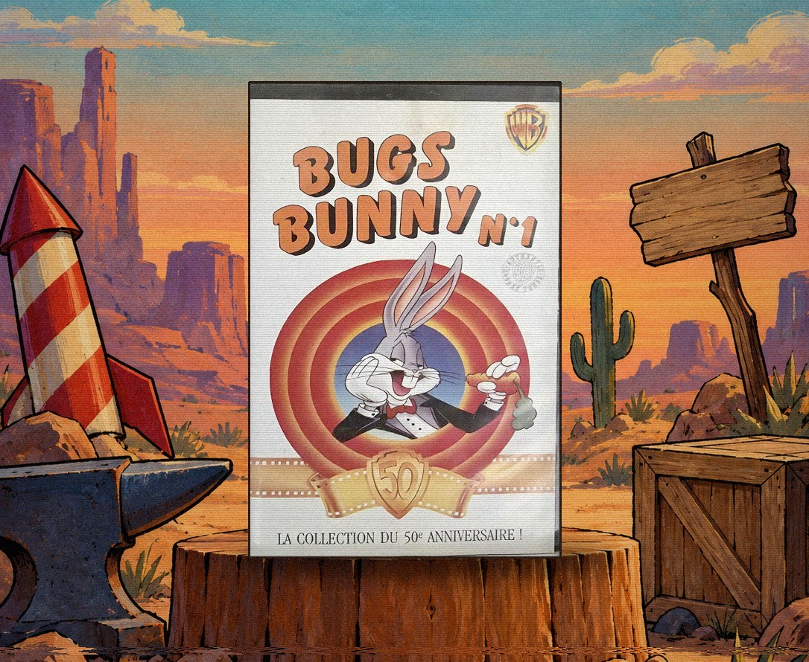
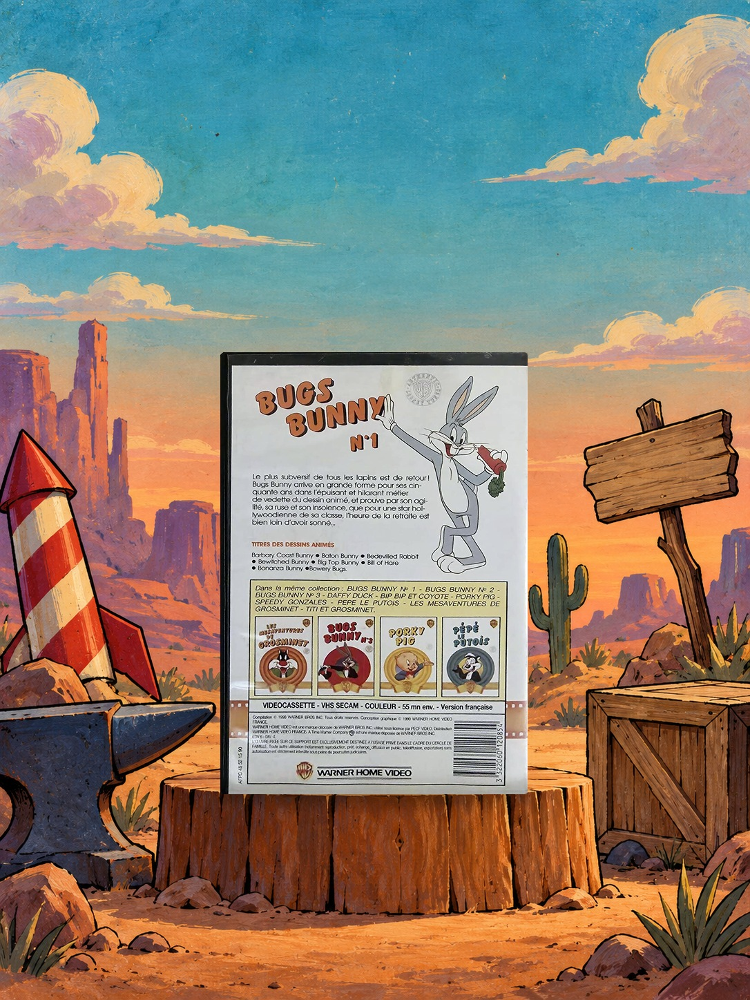
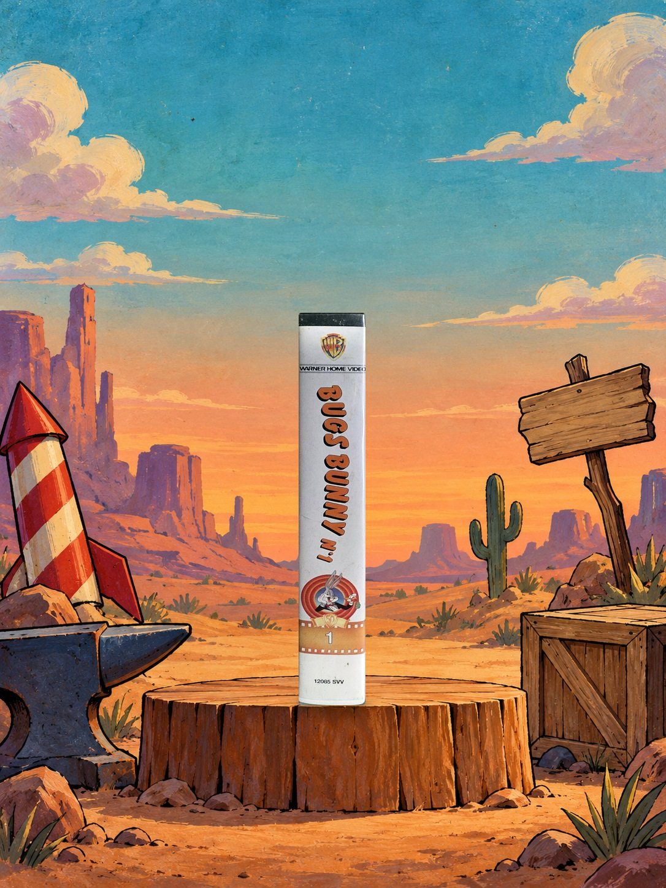

Sommaire4 sections
J'avais sept ans. Cette cassette, on me l'a sûrement offerte pour mon anniversaire.
Au dos, huit dessins animés. Mes préférés : Bonanza Bunny et Bewitched Bunny.
Mais ce ne sont pas eux que je revois quand je repense à cette cassette. Je revois le salon. Moi, assis, devant les aventures de Bugs Bunny. Un léger halo de soleil qui flotte dans l'air.
Je suis heureux. Serein. Mes parents s'occupent de la maison. Mes grands-parents vont bien.
C'est ça, pour moi, l'insouciance de l'enfance. Et elle tient dans un boîtier noir, avec un lapin gris qui croque une carotte.
Ce soir, on rembobine.

La cassette : face avant
Cinquante-cinq minutes, huit dessins animés, tournés entre 1949 et 1962. La jaquette les liste dans l'ordre alphabétique, et tous commencent par un B : Barbary Coast Bunny, Baton Bunny, Bedevilled Rabbit, Bewitched Bunny, Big Top Bunny, Bill of Hare, Bonanza Bunny et Bowery Bugs.
Trois sont signés Chuck Jones, quatre Robert McKimson, un Arthur Davis. Bugs y creuse un tunnel jusqu'à San Francisco, dirige un orchestre imaginaire dérangé par une mouche, affronte un ours acrobate sous le chapiteau, raconte le saut de Steve Brodie du pont de Brooklyn, et croise deux fois le Diable de Tasmanie.
Dans Bewitched Bunny (1954), une sorcière veut cuisiner Hansel et Gretel. Bugs, déguisé en inspecteur d'école, les sauve et la transforme en lapine. Dans Bonanza Bunny (1959), nous sommes au Klondike en 1896 : Bugs entre dans un saloon de Dawson City avec un sac de pépites, un homme les convoite, il perd, et les pépites n'étaient que des cailloux peints en jaune.
Une cassette comme un tiroir de souvenirs.

Le dos de la jaquette : les huit dessins animés

La tranche de la cassette
Bugs Bunny est né le 27 juillet 1940 avec A Wild Hare, de Tex Avery, où il prononce pour la première fois son « What's up, Doc ? ». En 1990, il a donc cinquante ans.
Warner Home Video France fête l'anniversaire avec une collection de dix titres, listés sur la jaquette : Bugs Bunny n°1, 2 et 3, Daffy Duck, Bip Bip et Coyote, Porky Pig, Speedy Gonzales, Pépé le Putois, Les Mésaventures de Grosminet, Titi et Grosminet.
Mel Blanc a prêté sa voix à Bugs de 1938 jusqu'à sa mort en 1989 : les huit dessins animés de la cassette ont été faits de son vivant, dans leur version d'origine. Bugs a reçu son étoile à Hollywood en 1985, et la jaquette l'écrit elle-même : « l'heure de la retraite est bien loin d'avoir sonné ». Pour ses cinquante ans, Box-Office Bunny sort en 1991, son premier court métrage au cinéma depuis 1964.
Un lapin de cinquante ans, qui revient.
Bugs Bunny n'a jamais pris sa retraite. La jaquette le disait déjà en 1990 : « l'heure de la retraite est bien loin d'avoir sonné ».
Moi, je n'ai plus sept ans. Le salon n'est plus tout à fait le même. Mais la cassette, elle, est toujours là. Huit dessins animés, entre 1949 et 1962, et un lapin gris qui croque sa carotte.
Quand je la remets dans le lecteur, le soleil revient dans la pièce. Ce léger halo qui flotte dans l'air. L'insouciance de mon enfance.
Ce soir, on rembobine.
Cassette
Bugs Bunny n°1
Collection
50e anniversaire des Looney Tunes
Éditeur
Warner Home Video France (licence PECF Vidéo)
Format
VHS SECAM couleur · version française
Durée
55 min environ
Dessins animés
8 · de 1949 à 1962
Réalisateurs
Chuck Jones · Robert McKimson · Arthur Davis
Ma préférence
Bonanza Bunny · Bewitched Bunny
SOMEDAY — SPÉCIAL NOSTALGIE N° 01 · Bewitched Bunny